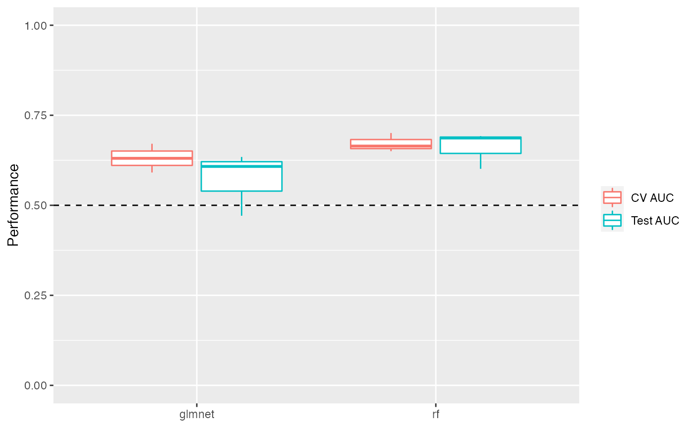
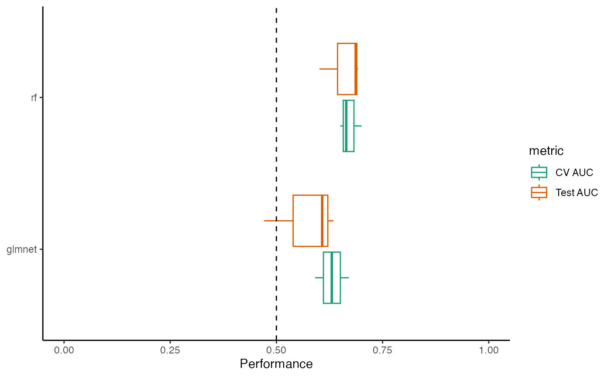
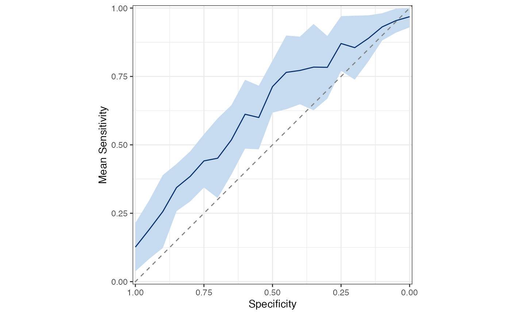
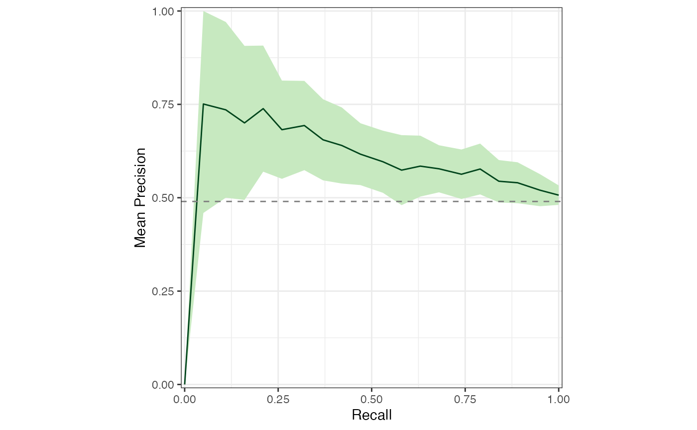
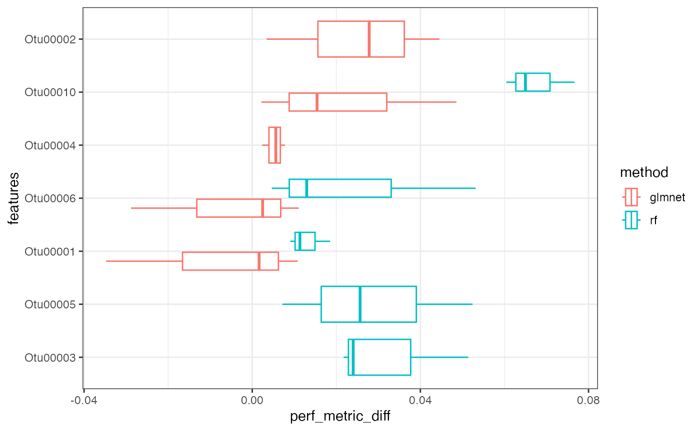
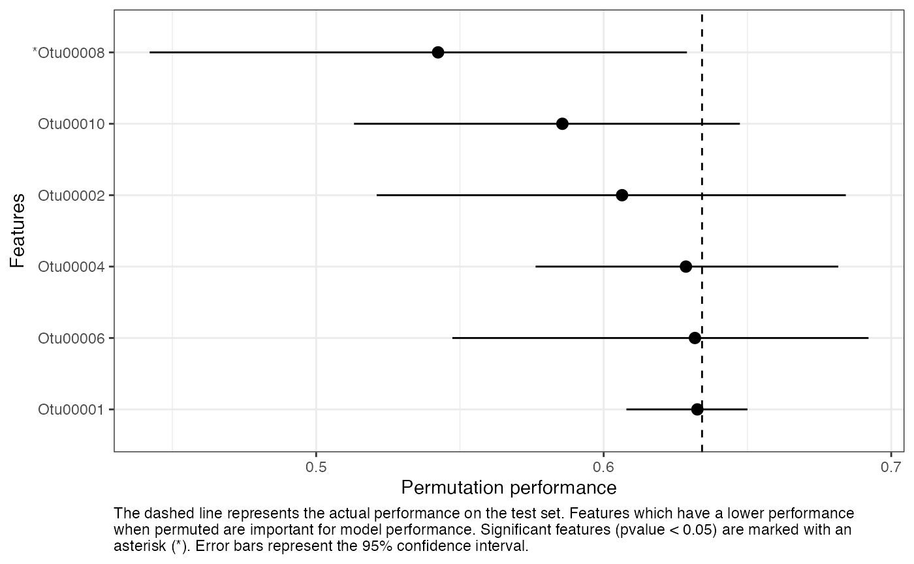

In this tutorial, we show how you can speed up pre-processing, model training, and feature importance steps for individual runs, as well as how to train multiple models in parallel within R and visualize the results. However, we highly recommend using a workflow manager such as Snakemake rather than parallelizing within a single R session. Jump to the section Parallelizing with Snakemake below if you’re interested in skipping right to our best recommendation.
library(mikropml)
library(dplyr)
#>
#> Attaching package: 'dplyr'
#> The following objects are masked from 'package:stats':
#>
#> filter, lag
#> The following objects are masked from 'package:base':
#>
#> intersect, setdiff, setequal, union
library(ggplot2)Speed up single runs
By default, preprocess_data(), run_ml(),
and compare_models() use only one process in series. If
you’d like to parallelize various steps of the pipeline to make them run
faster, install foreach, future,
future.apply, and doFuture. Then, register a
future plan prior to calling these functions:
doFuture::registerDoFuture()
future::plan(future::multicore, workers = 2)Above, we used the multicore plan to split the work
across 2 cores. See the future
documentation for more about picking the best plan for your use
case. Notably, multicore does not work inside RStudio or on
Windows; you will need to use multisession instead in those
cases.
After registering a future plan, you can call
preprocess_data() and run_ml() as usual, and
they will run certain tasks in parallel.
otu_data_preproc <- preprocess_data(otu_mini_bin, "dx")$dat_transformed
result1 <- run_ml(otu_data_preproc, "glmnet", seed = 2019)There’s a also a parallel version of the rf engine
called parRF which trains the trees in the forest in
parallel. See the caret
docs for more information.
Bootstrap performance
If you only intend to call run_ml() once to generate one
train/test split (e.g. such as for a temporal split of the dataset), you
can evaluate the model performance by bootstrapping the test set.
Here we show how to generate 100 bootstraps and
calculate a confidence interval for the model performance. We only use
100 here for computation speed, but it is recommended to
generate 10000 bootstraps for a more precise estimation of
the confidence interval.
boot_perf <- bootstrap_performance(result1,
outcome_colname = "dx",
bootstrap_times = 100, alpha = 0.05
)
boot_perf
#> # A tibble: 15 × 6
#> term .lower .estimate .upper .alpha .method
#> <chr> <dbl> <dbl> <dbl> <dbl> <chr>
#> 1 AUC 0.407 0.641 0.814 0.05 percentile
#> 2 Accuracy 0.436 0.585 0.731 0.05 percentile
#> 3 Balanced_Accuracy 0.43 0.584 0.730 0.05 percentile
#> 4 Detection_Rate 0.166 0.301 0.449 0.05 percentile
#> 5 F1 0.417 0.586 0.753 0.05 percentile
#> 6 Kappa -0.141 0.165 0.450 0.05 percentile
#> 7 Neg_Pred_Value 0.315 0.573 0.774 0.05 percentile
#> 8 Pos_Pred_Value 0.410 0.595 0.795 0.05 percentile
#> 9 Precision 0.410 0.595 0.795 0.05 percentile
#> 10 Recall 0.397 0.591 0.799 0.05 percentile
#> 11 Sensitivity 0.397 0.591 0.799 0.05 percentile
#> 12 Specificity 0.356 0.578 0.780 0.05 percentile
#> 13 cv_metric_AUC 0.622 0.622 0.622 0.05 percentile
#> 14 logLoss 0.663 0.685 0.710 0.05 percentile
#> 15 prAUC 0.421 0.587 0.728 0.05 percentileCall run_ml() multiple times in parallel in R
You can use functions from the future.apply package to
call run_ml() multiple times in parallel with different
parameters. You will first need to run future::plan() as
above if you haven’t already. Then, call run_ml() with
multiple seeds using future_lapply():
# NOTE: use more seeds for real-world data
results_multi <- future.apply::future_lapply(seq(100, 102), function(seed) {
run_ml(otu_data_preproc, "glmnet", seed = seed)
}, future.seed = TRUE)
#> Using 'dx' as the outcome column.
#> Training the model...
#> Loading required package: lattice
#>
#> Attaching package: 'caret'
#> The following object is masked from 'package:mikropml':
#>
#> compare_models
#> Training complete.
#> Using 'dx' as the outcome column.
#> Training the model...
#> Loading required package: lattice
#>
#> Attaching package: 'caret'
#> The following object is masked from 'package:mikropml':
#>
#> compare_models
#> Training complete.
#> Using 'dx' as the outcome column.
#> Training the model...
#> Training complete.Each call to run_ml() with a different seed uses a
different random split of the data into training and testing sets. Since
we are using seeds, we must set future.seed to
TRUE (see the future.apply
documentation and this
blog post for details on parallel-safe random seeds). This example
uses only a few seeds for speed and simplicity, but for real data we
recommend using many more seeds to get a better estimate of model
performance.
In these examples, we used functions from the
future.apply package to run_ml() in parallel,
but you can accomplish the same thing with parallel versions of the
purrr::map() functions using the furrr package
(e.g. furrr::future_map_dfr()).
Extract the performance results and combine into one dataframe for all seeds:
perf_df <- future.apply::future_lapply(results_multi,
function(result) {
result[["performance"]] %>%
select(cv_metric_AUC, AUC, method)
},
future.seed = TRUE
) %>%
dplyr::bind_rows()
perf_df
#> # A tibble: 3 × 3
#> cv_metric_AUC AUC method
#> <dbl> <dbl> <chr>
#> 1 0.630 0.634 glmnet
#> 2 0.591 0.608 glmnet
#> 3 0.671 0.471 glmnetMultiple ML methods
You may also wish to compare performance for different ML methods.
mapply() can iterate over multiple lists or vectors, and
future_mapply() works the same way:
# NOTE: use more seeds for real-world data
param_grid <- expand.grid(
seeds = seq(100, 103),
methods = c("glmnet", "rf")
)
results_mtx <- future.apply::future_mapply(
function(seed, method) {
run_ml(otu_data_preproc,
method,
seed = seed,
find_feature_importance = TRUE
)
},
param_grid$seeds,
param_grid$methods %>% as.character(),
future.seed = TRUE
)
#> Using 'dx' as the outcome column.
#> Training the model...
#> Loading required package: lattice
#>
#> Attaching package: 'caret'
#> The following object is masked from 'package:mikropml':
#>
#> compare_models
#> Training complete.
#> Finding feature importance...
#> Feature importance complete.
#> Using 'dx' as the outcome column.
#> Training the model...
#> Training complete.
#> Finding feature importance...
#> Feature importance complete.
#> Using 'dx' as the outcome column.
#> Training the model...
#> Training complete.
#> Finding feature importance...
#> Feature importance complete.
#> Using 'dx' as the outcome column.
#> Training the model...
#> Training complete.
#> Finding feature importance...
#> Feature importance complete.
#> Using 'dx' as the outcome column.
#> Training the model...
#> Loading required package: lattice
#>
#> Attaching package: 'caret'
#> The following object is masked from 'package:mikropml':
#>
#> compare_models
#> Training complete.
#> Finding feature importance...
#> Feature importance complete.
#> Using 'dx' as the outcome column.
#> Training the model...
#> Training complete.
#> Finding feature importance...
#> Feature importance complete.
#> Using 'dx' as the outcome column.
#> Training the model...
#> Training complete.
#> Finding feature importance...
#> Feature importance complete.
#> Using 'dx' as the outcome column.
#> Training the model...
#> Training complete.
#> Finding feature importance...
#> Feature importance complete.Visualize the results
ggplot2 is required to use our plotting functions below.
You can also create your own plots however you like using the results
data.
Performance
Mean AUC
perf_df <- lapply(
results_mtx["performance", ],
function(x) {
x %>% select(cv_metric_AUC, AUC, method)
}
) %>%
dplyr::bind_rows()
perf_boxplot <- plot_model_performance(perf_df)
perf_boxplot
plot_model_performance() returns a ggplot2 object. You
can add layers to customize the plot:
perf_boxplot +
theme_classic() +
scale_color_brewer(palette = "Dark2") +
coord_flip()
ROC and PRC curves
First calculate the sensitivity, specificity, and precision for all models.
get_sensspec_seed <- function(colnum) {
result <- results_mtx[, colnum]
trained_model <- result$trained_model
test_data <- result$test_data
seed <- result$performance$seed
method <- result$trained_model$method
sensspec <- calc_model_sensspec(
trained_model,
test_data,
"dx"
) %>%
mutate(seed = seed, method = method)
return(sensspec)
}
sensspec_dat <- purrr::map_dfr(
seq(1, dim(results_mtx)[2]),
get_sensspec_seed
)
#> Using 'dx' as the outcome column.
#> Using 'dx' as the outcome column.
#> Using 'dx' as the outcome column.
#> Using 'dx' as the outcome column.
#> Using 'dx' as the outcome column.
#> Using 'dx' as the outcome column.
#> Using 'dx' as the outcome column.
#> Using 'dx' as the outcome column.Plot curves for a single model
sensspec_1 <- sensspec_dat %>% filter(seed == 100, method == "glmnet")
sensspec_1 %>%
ggplot(aes(x = specificity, y = sensitivity, )) +
geom_line() +
geom_abline(
intercept = 1, slope = 1,
linetype = "dashed", color = "grey50"
) +
coord_equal() +
scale_x_reverse(expand = c(0, 0), limits = c(1.01, -0.01)) +
scale_y_continuous(expand = c(0, 0), limits = c(-0.01, 1.01)) +
labs(x = "Specificity", y = "Sensitivity") +
theme_bw() +
theme(legend.title = element_blank())
baseline_precision_otu <- calc_baseline_precision(
otu_data_preproc,
"dx", "cancer"
)
#> Using 'dx' as the outcome column.
sensspec_1 %>%
rename(recall = sensitivity) %>%
ggplot(aes(x = recall, y = precision, )) +
geom_line() +
geom_hline(
yintercept = baseline_precision_otu,
linetype = "dashed", color = "grey50"
) +
coord_equal() +
scale_x_continuous(expand = c(0, 0), limits = c(-0.01, 1.01)) +
scale_y_continuous(expand = c(0, 0), limits = c(-0.01, 1.01)) +
labs(x = "Recall", y = "Precision") +
theme_bw() +
theme(legend.title = element_blank())
Plot mean ROC and PRC for all models
sensspec_dat %>%
calc_mean_roc() %>%
plot_mean_roc()
sensspec_dat %>%
calc_mean_prc() %>%
plot_mean_prc(baseline_precision = baseline_precision_otu)
Feature importance
The perf_metric_diff from the feature importance data
frame contains the differences between the performance on the actual
test data and the performance on the permuted test data
(i.e. test minus permuted). If a
feature is important for model performance, we expect
perf_metric_diff to be positive. In other words, the
features that resulted in the largest decrease in
performance when permuted are the most important features.
Feature importance for multiple models
You can select the top n most important features for your models and plot them like so:
feat_df <- results_mtx["feature_importance", ] %>%
dplyr::bind_rows()
top_n <- 5
top_feats <- feat_df %>%
group_by(method, feat) %>%
summarize(mean_diff = median(perf_metric_diff)) %>%
filter(mean_diff > 0) %>%
slice_max(order_by = mean_diff, n = top_n)
#> `summarise()` has grouped output by 'method'. You can override using the
#> `.groups` argument.
feat_df %>%
right_join(top_feats, by = c("method", "feat")) %>%
mutate(features = forcats::fct_reorder(factor(feat), mean_diff)) %>%
ggplot(aes(x = perf_metric_diff, y = features, color = method)) +
geom_boxplot() +
geom_vline(xintercept = 0, linetype = "dashed") +
labs(
x = "Decrease in performance (actual minus permutation)",
y = "Features",
caption = "Features which have a lower performance when permuted have a
difference in performance above zero. The features with the greatest
decrease are the most important for model performance." %>%
stringr::str_wrap(width = 100)
) +
theme_bw() +
theme(plot.caption = element_text(hjust = 0))
See the docs for get_feature_importance() for more
details on how these values are computed.
Feature importance for a single model
You can also plot feature importance for a single model. Here we report the actual performance, the permutation performance, and the empirical 95% confidence interval for the permutation performance.
feat_imp_1 <- results_mtx[, 1][["feature_importance"]]
perf_metric_name <- results_mtx[, 1][["trained_model"]]$metric
perf_actual <- results_mtx[, 1][["performance"]] %>% pull(perf_metric_name)
feat_imp_1 %>%
filter(perf_metric_diff > 0) %>%
mutate(feat = if_else(pvalue < 0.05, paste0("*", feat), as.character(feat)) %>%
as.factor() %>%
forcats::fct_reorder(perf_metric_diff)) %>%
ggplot(aes(x = perf_metric, xmin = lower, xmax = upper, y = feat)) +
geom_pointrange() +
geom_vline(xintercept = perf_actual, linetype = "dashed") +
labs(
x = "Permutation performance",
y = "Features",
caption = "The dashed line represents the actual performance on the
test set. Features which have a lower performance when permuted are
important for model performance. Significant features (pvalue < 0.05)
are marked with an asterisk (*). Error bars represent the 95%
confidence interval." %>% stringr::str_wrap(width = 110)
) +
theme_bw() +
theme(plot.caption = element_text(hjust = 0))
Live progress updates
preprocess_data() and
get_feature_importance() support reporting live progress
updates using the progressr package. The format is up to
you, but we recommend using a progress bar like this:
# optionally, specify the progress bar format with the `progress` package.
progressr::handlers(progressr::handler_progress(
format = ":message :bar :percent | elapsed: :elapsed | eta: :eta",
clear = FALSE,
show_after = 0
))
# tell progressr to always report progress in any functions that use it.
# set this to FALSE to turn it back off again.
progressr::handlers(global = TRUE)
# run your code and watch the live progress updates.
dat <- preprocess_data(otu_mini_bin, "dx")$dat_transformed
#> Using 'dx' as the outcome column.
#> preprocessing ========================>------- 78% | elapsed: 1s | eta: 0s
results <- run_ml(dat, "glmnet",
kfold = 2, cv_times = 2,
find_feature_importance = TRUE
)
#> Using 'dx' as the outcome column.
#> Training the model...
#> Training complete.
#> Feature importance =========================== 100% | elapsed: 37s | eta: 0sNote that some future backends support “near-live” progress updates,
meaning the progress may not be reported immediately when parallel
processing with futures. Read more on that in
the progressr vignette. For more on
progressr and how to customize the format of progress
updates, see the progressr
docs.
Parallelizing with Snakemake
When parallelizing multiple calls to run_ml() in R as in
the examples above, all of the results objects are held in memory. This
isn’t a big deal for a small dataset run with only a few seeds. However,
for large datasets run in parallel with, say, 100 seeds (recommended),
you may run into problems trying to store all of those objects in memory
at once.
Using a workflow manager such as Snakemake or Nextflow is highly recommend to maximize the scalability and reproducibility of computational analyses. We created a template Snakemake workflow here which you can use as a starting point for your ML project.